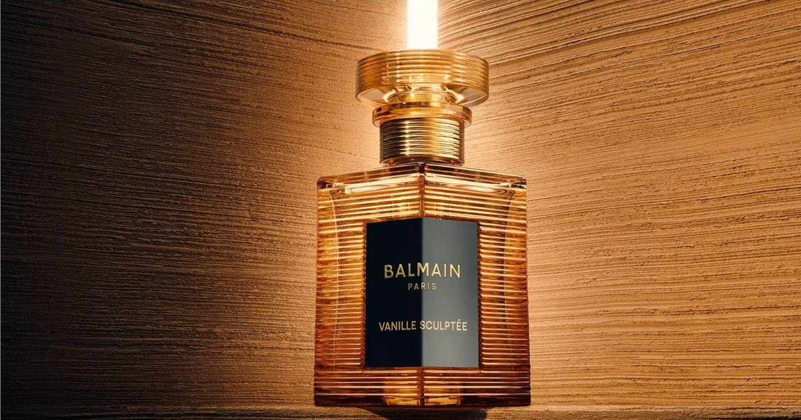

Balmain Beauty's Latest Launch Rethinks Vanilla Scents
Balmain Beauty's newest Les Éternels scent, Vanille Sculptée, layers five facets of vanilla — with pink peppercorn giving the opening sweetness a little bite.

Disclosure: this post contains affiliate links. I earn a commission on qualifying purchases.
The scent
Balmain Beauty's newest Les Éternels scent is Vanille Sculptée. It is a vanilla scent built on a simple premise: vanilla does not have to be one-note.
Five facets of vanilla
Rather than leaning on a single vanilla impression, Vanille Sculptée layers five facets of vanilla. The point of the layering is depth — the familiar note, presented from more than one angle, so the scent reads as something more considered than a straightforward sweet vanilla.
Brand: Balmain Beauty
Collection: Les Éternels
Scent: Vanille Sculptée
Approach: Five facets of vanilla layered together
Opening twist: Pink peppercorn
The opening
The opening is where the scent makes its first distinction. Pink peppercorn gives the opening sweetness a little bite — a touch of spice against the vanilla, so the first impression is sweet but not flat.
That contrast is the whole idea of the launch: a vanilla scent that keeps its sweetness but refuses to sit still with it.
Why it's worth noting
Vanilla is one of perfumery's most familiar notes, which makes it one of the hardest to do something new with. Balmain's answer here is construction rather than reinvention — take the note everyone knows, build it in five layers, and sharpen the opening with pink peppercorn.
Source: Balmain Beauty's latest launch rethinks vanilla scents